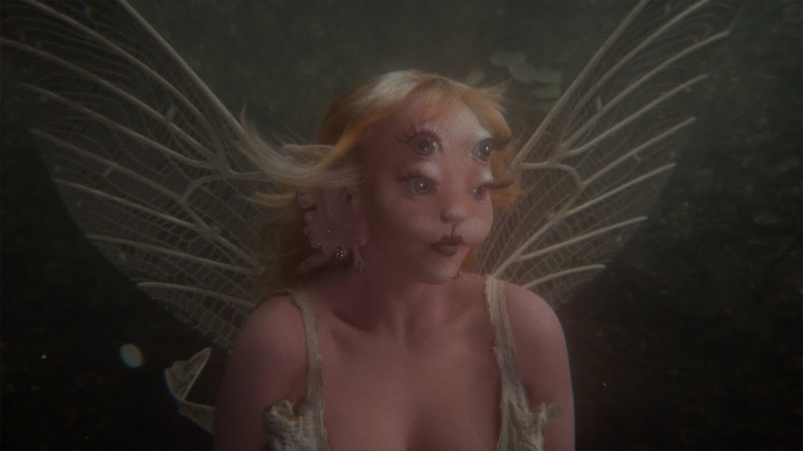
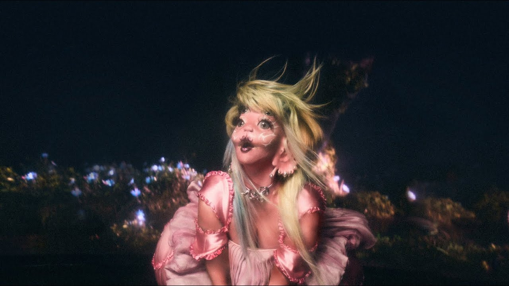
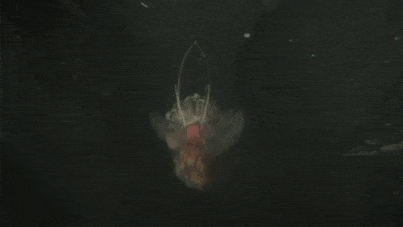

Após lançar seu segundo álbum de estúdio, K-12, acompanhado do filme de mesmo nome em 2019, Martinez lançou seu quarto extended play, After School (2020), que serviu como uma edição deluxe de seu segundo álbum de estúdio. No entanto, o extended play não é conectado ao filme em termos de linha do tempo.
Depois de um hiato de dois anos para a música, Martinez começou a arquivar todas as suas publicações no Instagram e deu indícios de seu futuro álbum em 18 de fevereiro de 2023. A cantora também lançou uma prévia de doze segundos no Spotify.
Após lançar seu segundo álbum de estúdio, K-12, acompanhado do filme de mesmo nome em 2019, Martinez lançou seu quarto extended play, After School (2020), que serviu como uma edição deluxe de seu segundo álbum de estúdio. No entanto, o extended play não é conectado ao filme em termos de linha do tempo.
Depois de um hiato de dois anos para a música, Martinez começou a arquivar todas as suas publicações no Instagram e deu indícios de seu futuro álbum em 18 de fevereiro de 2023. A cantora também lançou uma prévia de doze segundos no Spotify.
A História de Portals
Portals, assim como os albúns anteriores de Melanie, continua a história começada em Cry Baby. Aqui temos a protagonista em um novo corpo, ela morreu e voltou dos mortos com uma aparência totalmente diferente daquilo que já conhecimos. Segundo a própria Melanie, o álbum narra a morte da personagem e como sua vida seguira após ela ressurgir dos mortos em um novo corpo, uma nova vida e em um novo lugar. Somos apresentados a essa nova atmosfera na primeira música do albúm: Death, no qual o refrão diz repetidamente "Eu voltei dos mortos" e faz uma grande reflexão sobre a vida pós morte e ressureição em novos corpos. Nessa novo disco podemos perceber que Melanie colocou um pouco mais de sua pessoalidade, misturando o ficticio com o real, um grande exemplo disso é a faixa Void, que ao mesmo tempo que retrata a personagem CryBaby presa no vazio após sua morte, retrata a autoestima de Melanie e como ela já se sentiu em sua vida: "Eu odeio quem eu era antes, Temo que não vou viver pra ver o dia de amanhã, Alguém me diga se esse é o inferno."
O significado de cada música segundo a própria Melanie:
DEATH
Geralmente eu já tenho alguns títulos escolhidos bem cedo na fase de conceitualização do álbum, antes mesmo de compor. Esse era um quase que obrigatório, eu simplesmente não estava conseguindo chegar em um resultado satisfatório nas outras vezes que tentei compor com outras pessoas. Um dia eu sentei no meu quartinho dos portais sozinha e comecei a cantar melodias. Eu ouvi um espírito com uma voz em um tom totalmente diferente do meu repetir, essa melodia que eu havia cantado sozinha em voz alta, no silêncio, e isso fez eu me arrepiar toda.
Eu estava com um pouco de medo no começo, mas continuei mesmo assim, usei essa melodia como uma confirmação do além. Escrevi os acordes depois de horas pesquisando pela omnisfera por um instrumento que reverberaria pela minha alma. Adicionei uma simples batida de bateria em looping no refrão (que mais tarde foi substituída na produção do meu colaborador favorito, C.J Baran, e por uma bateria de verdade tocada por Ilan Rubin da banda Nine Inch Nails, que também tocou bateria em algumas outras faixas). Quando eu finalizei a música, eu a toquei pra minha melhor amiga de 22 anos de amizade, que é como uma irmã pra mim, no mesmo dia, ela tinha acabado de passar por várias perdas em sua família. Quando ela ouviu as músicas com seu fone de ouvido, lágrimas escorreram pelo seu rosto. A música terminou e ela olhou pra mim e disse "É essa"
VOID
Essa foi a primeira música que eu produzi completamente sozinha, e também foi no meu quartinho dos portais. A primeira coisa que eu fiz foi criar uma batida com o baixo. Foi a exata melodia de uma gravação de voz que eu havia feito dias antes. A melodia do refrão e as letras vieram de uma só vez depois de eu criar esse looping. Eu também fiz um looping simples de bateria, que depois foi substituído na mixagem pelo Rhys Hasting.
Eu me lembro de gritar o refrão enquanto chorava. Senti como se fosse um peso sendo levantado em cima da minha ansiedade, do meu cérebro, e se encaixou perfeitamente no segundo estágio. Um abismo. Um lugar escuro onde você é deixado sozinho com seus pensamentos introspectivos, para que você encontre uma luz dentro de si mesmo.
TUNNEL VISION
Eu queria fazer uma música que falasse sobre o estágio de passar por um túnel de cantigas familiares e imagens que tornassem a transição para o outro lado mais fácil, e ao mesmo tempo escrever algo que tivesse múltiplos significados, para que as pessoas pudessem se identificar em mais de um só jeito.
Essa faixa vazou no mesmo ano quando hackearam um drive, tomou tudo em mim para não descartar essa música. Mas eu não consegui escrever uma música melhor sobre esse túnel, logo a canção permaneceu.
FAERIE SOIREÉ
Houveram diversos dias em que eu sentei no meu quartinho dos portais querendo criar algo fora das minhas próprias percepções. Eu compus a música bem rapidamente. Eu ficava dançando ao escutar ela, deixando essa energia das fadas tomar conta de mim. Senti como se fosse o estágio de regressão à casa. Conectando com a alma de minha família. Um sarau espiritual entre eu e meus guias feéricos.
LIGHT SHOWER
Tem um lugar no pós-morte que as pessoas que estavam sob efeito de hipnose descreveram como um chuveiro de luz que limpava a alma. Um lugar onde raios de luz coloridos por joias brilhavam por cada centímetro de sua alma, limpando seu espírito de todos os traumas que ele havia vivenciado em sua vida passada. Lhe restaurando para a sua vibração original. Eu lembro de ler sobre isso enquanto estava sentada no telhado da minha garagem, imaginando como aquilo seria, enquanto os raios de sol batiam em minha pele. Algumas semanas depois eu estava sentada em minha banheira com um violão e fiquei a noite toda acordada compondo essa música de amor sobre esse banho de luz, assim pude criar camadas de diferentes significados. Essa também foi a primeira música que compus para esse álbum.
SPIDER WEEB
Se um dia eu for dar aula sobre como escrever uma música conceitual ou temática, essa seria a música que eu usaria como referência. A interligação de todos nós, e sentida por aqueles que fazem hipnoterapia, eu mesma senti quando eu participei de uma sessão e foi aí que soube sobre o que queria compor. Eu queria dar uma mudada, então eu encontrei essa oportunidade de criar um duplo significado para a ressonância terráquea. Então, “SPIDER WEB” também fala sobre o quão forte as redes sociais nos tem em suas mãos. “Se alimentando dos nossos pontos altos e baixos, curiosos para nos ver passando por dificuldade, ninguém pode sair uma vez que emergimos.” Eu compus essa com meu violão na salinha dos portais, gravei no bloco de notas e mandei para o CJ. Ele criou o incrível instrumental presente na faixa no mesmo dia, e até criou o drop perfeito com barulhos feitos com sua própria boca, criando essa vibe extremamente aracnídea.
LEECHES
As pessoas descreveram a vida pós-morte como uma espécie de escola, projetando em suas vidas passadas como as pessoas que eles reencarnavam juntos, assim se colocando no lugar do outro. Mostrando como eles poderiam lidar da melhor forma com os conflitos vivenciados na Terra em suas próximas vidas. As próximas músicas falam sobre esses conflitos.
Eu gosto de acreditar que planejamos eles em conjunto antes de voltarmos, engatilhando uns aos outros a evoluirmos. Vivendo na cidade mais monótona e isolante, Los Angeles, eu decidi compor “LEECHES” sobre as pessoas que vivem aqui pelos motivos errados, e como eles agem perto das pessoas que estão nos holofotes.
BATTLE OF THE LARYNX
Essa foi a última música que eu fiz para o álbum. Foi em maio do ano passado, eu voltei pro Havaí para a mesma casa que escrevi “TUNNEL VISION”, e o CJ me acompanhou trazendo a última celebração nas últimas sessões antes de declararmos o álbum como finalizado. Eu peguei meu violão e escrevi essa música rapidamente do lado de fora da casa. E então o CJ adicionou camadas de magia na produção, como ele sempre faz. Rhys gravou os toques de bateria um pouco depois. Criando esse momento de urgência, tornando o assunto da música ainda mais necessário. Eu escrevi essa sobre o conflito entre dois tipos de pessoas, uma que grita um monte de baboseiras bem alto tentando intimidar os outros, já no outro lado, temos a pessoa que pensa bem antes de usar as suas palavras e as diz com calma, mas com ênfase para deixar seu ponto bem claro.
THE CONTORTIONIST
Eu nunca vou me esquecer dos sorrisos intensos que eu e CJ sentimos quando criamos essa música. Um momento real de colaboração onde ambos sentimos um estalo em nossas antenas, como uma chamada de telefone bem alta. Uma grande parte do nosso processo era criar as músicas e depois escolher as nossas favoritas, aí entrando na cabine de gravação e criar as melodias na hora, costurando os melhores momentos juntos, depois eu ficava andando em volta da piscina escrevendo a letra que se encaixassem no ritmo. As risadas descontroladas que você escuta são dos takes que eu fiz. O conflito dessa música é sobre como você se desdobra para pessoas que não te aceitam como você é.
MOON CYCLE
Eu queria escrever uma música divertida, leve, sobre ser uma pessoa que menstrua. Como o nosso sangue representa vitalidade e vida. Eu queria que o refrão fosse bonito usasse analogias sobre sangrar que parecessem doces. “Suco derretendo como framboesas, romã é tão assustadora, como a minha alma fez ele uivar para o meu ciclo da lua, querido.” Os ruídos que iniciam a música são as minhas cólicas, eu as gravei com o meu celular.
NYMPHOLOGY
Eu queria que fosse uma faixa meio mal criada, sendo então um comentário sobre a caixa que alguns homens colocam as pessoas que se apresentam como mulheres dentro, nos chamando por nomes como “uma fada maníaca, uma garota sonhadora.” Sendo forçada a atuar nesse papel de mãe e cuidadora, enquanto eles nos enganam e nos chamam de loucas no instante em que nos expressamos como nos sentimos.
O interlúdio no final dessa música na verdade se chama “Amulet.” Meu namorado Verde, estava fazendo uma limpa em seu computador e o instrumental começou a tocar do nada e meus ouvidos ficaram aguçados. Era uma faixa que ele havia produzido há alguns anos que estava lá parada coletando poeira digital. Eu imediatamente escrevi algo em cima dela, mas uma música inteira acabou sendo bem complicada, eu a amei e não tinha ideia do que fazer com ela. Então, em um dia aleatório eu estava no estúdio e pensei: "E se Amulet fosse um interlúdio para uma das outras músicas?" E como algo do destino, a última nota de NYMPHOLOGY é a primeira nota de Amulet. Se encaixando perfeitamente como um quebra cabeça.
EVIL
Minha música favorita sobre conflitos! Eu andei em volta da piscina por uma meia hora compondo a letra e a melodia. Fluiu com facilidade e sem esforço. Acho que é porque eu tinha acabado de passar por um ponto em que minha mente tinha processado o meu último relacionamento.
Eu queria que a letra fosse a mais feroz e mais forte que eu já fiz. Toda vez que eu terminava uma frase eu parava e pensava “Não, ainda não está má o suficiente.” É sobre lidar com um narcisista que não ironicamente te chama de malvada só porque você conseguia ver por trás das mentiras dele. Eu passei um dia inteiro arruinando as minhas cordas vocais quando gravei essa. Definitivamente é uma das mais difíceis de se cantar.
WOMB
Eu sabia que queria que o álbum terminasse com uma canção chamada de útero. Essa foi uma das músicas que escrevi cedo, lá por 2020. Essa faixa foi escrita com a perspectiva de adentrar uma nova vida. Os sentimentos de entusiasmo que crescem quando você está prestes a esquecer de tudo o que você sabe sobre si mesmo, para que a sua alma possa levar suas experiências, e seu progresso na Terra para frente."